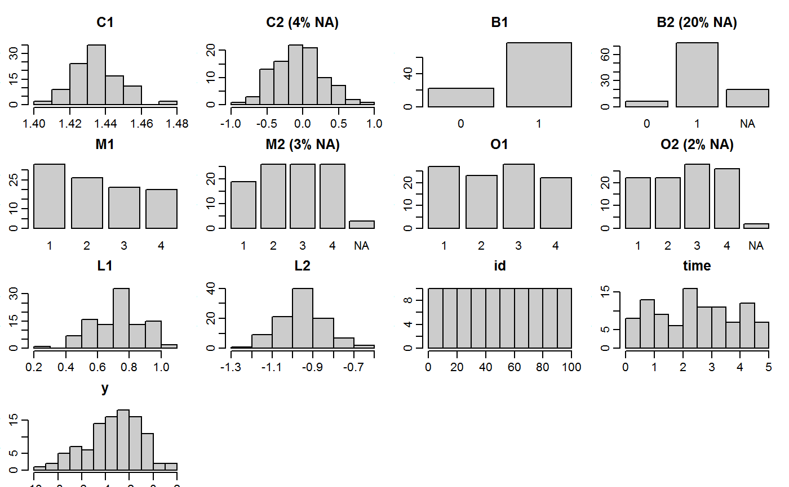

plot_all.RdThis function plots a grid of histograms (for continuous variables) and barplots (for categorical variables) and labels it with the proportion of missing values in each variable.
plot_all(data, nrow = NULL, ncol = NULL, fill = grDevices::grey(0.8), border = "black", allNA = FALSE, use_level = FALSE, idvar, xlab = "", ylab = "frequency", ...)
| data | a |
|---|---|
| nrow | optional number of rows and columns in the plot layout; automatically chosen if unspecified |
| ncol | optional number of rows and columns in the plot layout; automatically chosen if unspecified |
| fill | color the histograms and bars are filled with |
| border | color of the borders of the histograms and bars |
| allNA | logical; if |
| use_level | logical; should the multi-level structure be taken into account?
This requires specification of the argument |
| idvar | name of the column that specifies the multi-level grouping structure |
| xlab | labels for the x- and y-axis |
| ylab | labels for the x- and y-axis |
| ... |
Vignette: Visualizing Incomplete Data
par(mar = c(2,2,3,1), mgp = c(2, 0.6, 0)) plot_all(wideDF)